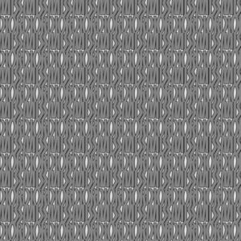

Trade Mark Journal No.2025/011 14 March 2025
WO0000001810662 (9,14,18,25)
Office of origin: France
Date of International Registration:5 August 2024
Date of designation in the UK:
5 August 2024

International priority date claimed: 29 March 2024
(France)
(5043100)
- Class 9
- Eyeglasses, sunglasses, goggles for sports; spectacle frames, spectacle cases, spectacle chains; cases, shell cases, bags, satchels and protective covers for computers, tablets, portable telephones and MP3 players.
- Class 14
- Jewelry, jewelry articles; precious and semi-precious stones, pearls (jewelry); precious metals and their alloys, bracelets (jewelry), brooches (jewelry), necklaces (jewelry), chains (jewelry), medals (jewelry), pendants (jewelry), earrings (jewelry), rings (jewelry), charms, tie pins; cuff links; key rings; jewelry cases; boxes of precious metal; boxes, cases and presentation cases for jewelry and timepieces; timepieces, chronometric instruments, watches, watch bands; watch dials, chronographs [watches].
- Class 18
- Leather and imitation leather; animal skins and furs; trunks and suitcases; wallets; purses (coin purses); card cases; briefcases of leather or imitation leather; attaché cases and document cases of leather and imitation leather; protective covers for clothing intended for travel; key cases of leather or imitation leather; bags; backpacks; handbags; traveling bags; vanity cases (empty); clutch bags (leather goods); traveling sets (leatherware); toiletry and make-up bags (empty); boxes made of leather; umbrellas; shoulder belts [straps] of leather.
- Class 25
- Clothing, namely, shorts, belts, suspenders, blouses, cardigans, trousers, overalls (clothing), shirts, t-shirts, skirts, polo shirts, pullovers, vests, bib overalls, dresses, coats, tailored suits, parkas, overcoats, blousons, jackets, underwear, hosiery, men's suits, ponchos, raincoats, socks, tights, leggings being trousers, pajamas, sleeve protectors, bathrobes, bathing suits; furs (clothing); wedding dresses; gloves; mittens; fingerless gloves; scarves; stoles; long scarves; shawls; neckties; collars [clothing]; bow ties; children's clothing, namely, t-shirts, shirts, trousers, shorts, coats, dresses, skirts, pajamas, bathrobes, bathing suits; layettes [clothing]; bibs, not of paper; sportswear, namely, t-shirts, trousers, tracksuits, shorts; shoes, namely, beach shoes, ski or sports shoes, slippers, boots, half-boots, sandals, pumps, esparto shoes or sandals; headwear, namely, beanies, hats, caps, visors (headwear), headbands, headpieces.
CHRISTIAN DIOR COUTURE
Representative: Haseltine Lake Kempner LLP, One Portwall Square , Portwall Lane Bristol BS1 6BH UNITED KINGDOM